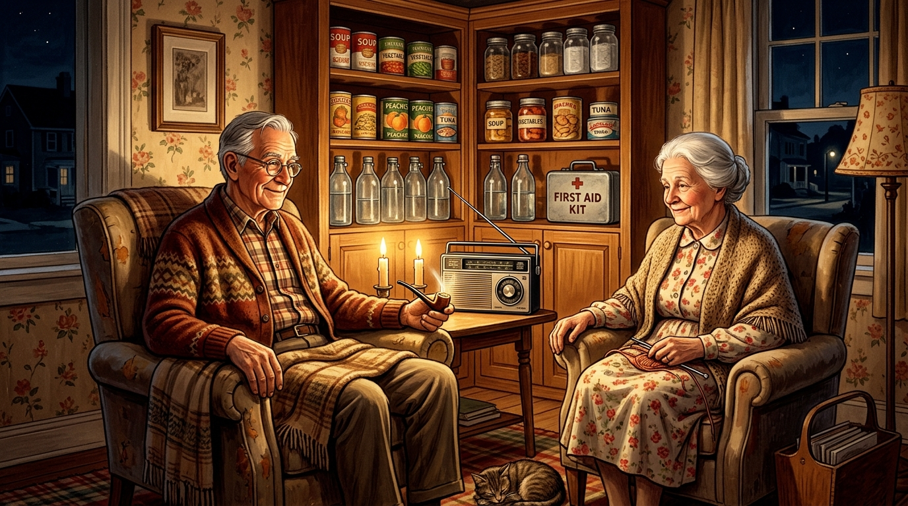
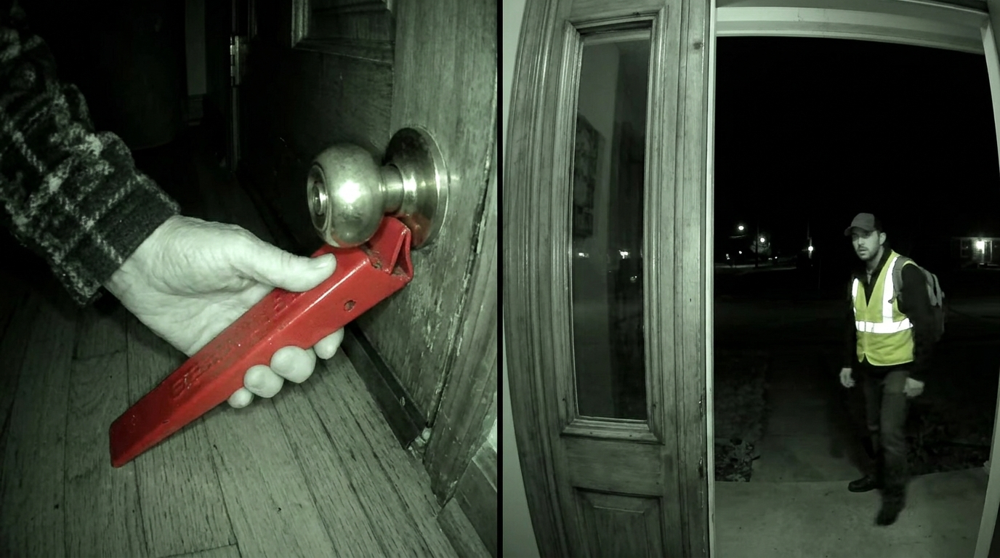
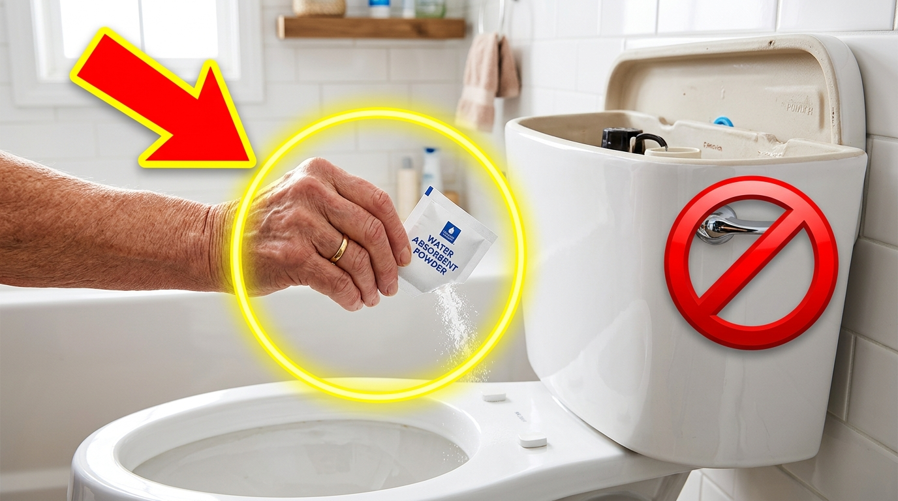
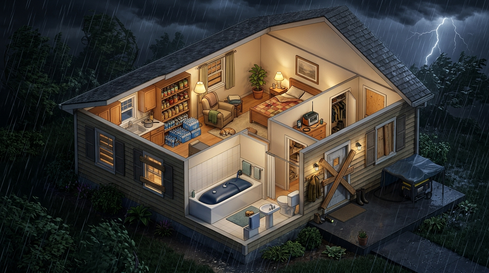

Catálogo de Estilos Virais para YouTube & Instagram (65+ Prepper)
Todas as 8 imagens abaixo já foram geradas em alta resolução e salvas na sua pasta images/. Você já pode usá-las diretamente nos seus Reels, Shorts, Carrosséis ou Thumbnails!

1. Estilo "Dor vs. Alívio" (Dividido ao Meio ❌ vs ✅)
Onde mais viraliza: Capas de YouTube e 1º slide de Carrossel no Instagram. O cérebro de quem tem 65+ entende a mensagem em 0,5 segundo sem precisar ler: galão pesado machuca a coluna (❌), filtro LifeStraw é leve e seguro (✅).
🇪🇸 Título Viral (ES): ¡DEJA de Cargar Garrafas de 20 Kilos a los 65+! (Usa Este Filtro de 60g)

2. Estilo "Cinema / Documentário Noturno" (Chiaroscuro)
Onde mais viraliza: Vídeos longos no YouTube e Reels de storytelling ("O que fazer nos primeiros 60 minutos de um apagão morando sozinho"). A luz quente do rádio solar e da estação Jackery no rosto gera empatia imediata.
🇪🇸 Título Viral (ES): ¿Vives Solo a los 70? Haz Estas 4 Cosas en la Primera Hora de un Apagón

3. Estilo "Nostalgia Anos 50 / Defesa Civil Clássica"
Onde mais viraliza: Público 65–80 anos nos EUA e Europa **ama** esse estilo de pintura clássica (estilo *Norman Rockwell*). Transmite paz, sabedoria dos avós e zero pânico.
🇪🇸 Título Viral (ES): Cómo Nuestros Abuelos Sobrevivían 90 Días Sin Luz ni Supermercados


4. Estilo "Câmera de Campainha / Alerta de Golpe Noturno"
Onde mais viraliza: YouTube Shorts e TikTok/Reels! A estética de câmera noturna mostrando a trava vermelha por dentro e um falso técnico lá fora no apagão prende 90% das pessoas nos primeiros 3 segundos.
🇪🇸 Título Viral (ES): ¡NUNCA Abras la Puerta a "Técnicos" en un Apagón! (Bloqueo de 3 Segundos)


5. Estilo "Hack Secreto com Seta Vermelha e Círculo Amarelo"
Onde mais viraliza: Campeão absoluto de cliques (CTR) no YouTube e Descubra do Google. A pessoa vê o sinal de proibido na descarga e um pacotinho misterioso sendo jogado na água e **precisa** clicar para entender.
🇪🇸 Título Viral (ES): ¡NO Tires de la Cisterna Cuando Falte el Agua! Pon Este Sobre en su Lugar


6. Estilo "Raio-X 3D da Casa Blindada Contra Crises"
Onde mais viraliza: Instagram (Posts mais salvos!) e Pinterest. As pessoas dão zoom na imagem para olhar cada cômodo da casa: a banheira com o WaterBOB azul, a despensa na cozinha e o rádio no quarto.
🇪🇸 Título Viral (ES): Mapa de la Casa Refugio para Mayores (¡Guarda Este Plano Habitación por Habitación!)


7. Estilo "Kit de Mesa Perfeitamente Alinhado (Knolling)"
Onde mais viraliza: É o estilo que **mais vende produtos de afiliado da Amazon**! O idoso vê os 7 itens exatos alinhados na mesa (Bolsa Fireproof com notas pequenas, LifeStraw, Rádio, Abridor 1 botão, Sirene SOS, Porta-comprimidos 90 dias) e quer comprar todos.
🇪🇸 Título Viral (ES): Los 7 Equipos Ligeros que Todo Mayor que Vive Solo Necesita en Casa

8. Estilo "Reportagem Urgente / Olhar Direto na Câmera"
Onde mais viraliza: YouTube e Facebook Watch. O olhar sério encarando a câmera com as prateleiras vazias no fundo e o "Dia 25" circulado no calendário para o *scroll* do feed instantaneamente.
🇪🇸 Título Viral (ES): Por Qué los Mayores Están Marcando el "DÍA 25" en su Calendario Antes del Desabastecimiento